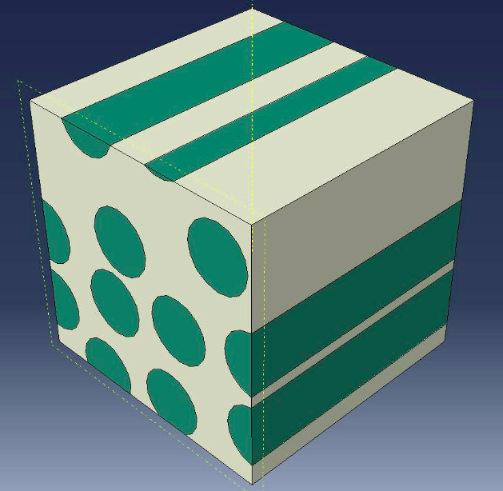
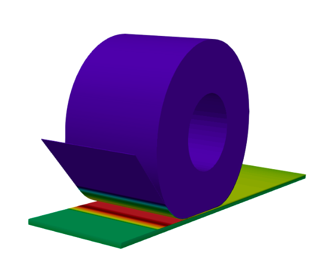
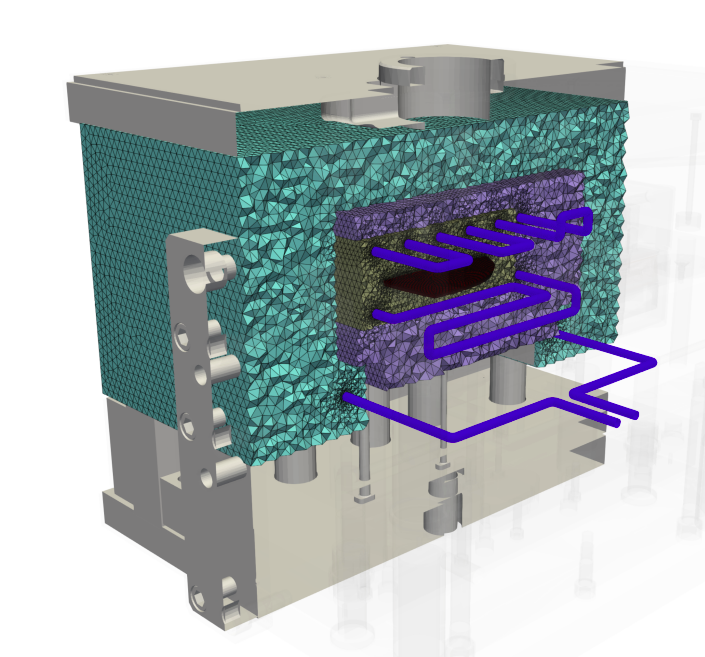
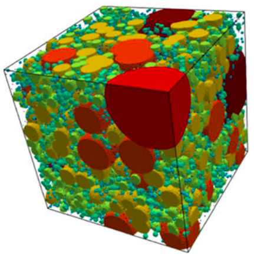
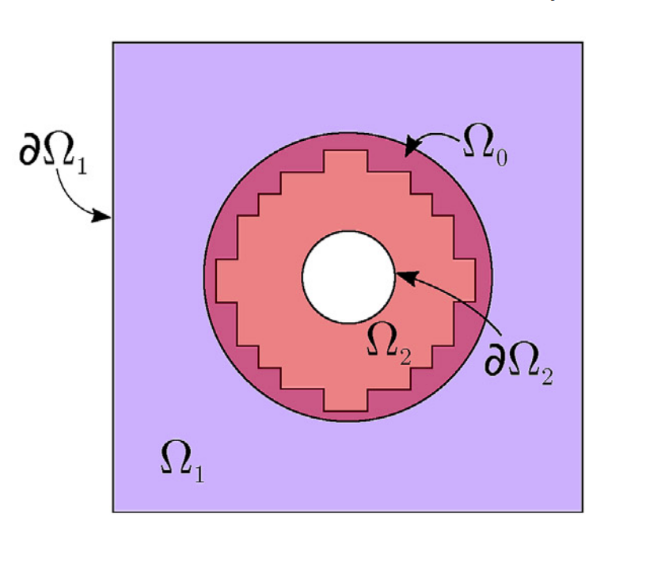

Research Fellow · CIMNE, Spain
A multidisciplinary engineering researcher specialising in high-performance computational modeling, multiscale analysis, and numerical optimization to develop robust models for advanced manufacturing processes.
I am a Mechanical Engineer with a PhD in Computational Mechanics from the CIMEC institute (UTN Santa Fe, Argentina). My research journey sits at the intersection of fluid physics, numerical methods, and high-performance computing.
My work bridges the gap between complex numerical algorithms and real-world advanced manufacturing processes.
Following my PhD, I spent four years as a Postdoctoral Research Fellow at Nantes Université (France), working on cutting-edge advanced manufacturing projects (MATCH II and SAMFAST). My work there focused heavily on 3D multiscale Eulerian FEM frameworks for thermoplastic composites and multi-material topology optimization for additive manufacturing. Prior to my time in France, I contributed to the European H2020 NRG-Storage project at CONICET.
Currently, I am a Research Fellow at CIMNE in Barcelona, Spain, continuing to push the boundaries of computational mechanics.


Radiative–conductive 2D & 3D microscale thermal FEM modeling with experimental validation for Automated Fiber Placement (AFP) processes.
View details →
High-fidelity 3D FEM modeling of heat transfer and 3D cooling channel optimization using a stochastic approach and overset mesh FEM strategy.
← View details
High-fidelity thermal simulations, topology optimization, and building energy modeling of phase change and porous materials.
View details →
Development of an overlapping-mesh technique for simulating fluid-structure interaction on complex moving geometries running on Linux-based HPC clusters.
← View details| Title | Authors | Venue | Year | Link |
|---|---|---|---|---|
| Lab-scale laser-assisted AFP bench with fixed roller: FEM radiative–conductive framework validation | , Le Louet V., Lefevre N., Le Corre S. | Composites Part A : Appl. Sci. Manuf. | 2026 | DOI → |
| Modélisation FEM multi-échelle du transfert thermique lors du processus AFP in-situ sur des composites thermoplastiques | , Le Reun A., Le Corre S. | SFT 2025 | 2025 | DOI → |
| 3D multi-scale thermal modeling of AFP in-situ consolidation processes for thermoplastic composites using an Eulerian FEM approach | , Le Reun A., Le Corre S. | ESAFORM 2025 | 2025 | DOI → |
| An overset improved element-free Galerkin-finite element method for the solution of transient heat conduction problems with concentrated moving heat sources | Álvarez-Hostos J.C., Ullah Z., , Tourn B. | Comput. Methods Appl. Mech. Eng. | 2024 | DOI → |
| A numerical framework for three-dimensional optimization of cooling channels in thermoplastic printed molds | , Sobotka V. | Applied Thermal Engineering | 2024 | DOI → |
| Fiber-scale 3D RTE FEM simulation of laser-matter interaction in the automated fiber placement process for heating laws prediction | , Le Reun A., Le Corre S. | ECCM 21 | 2024 | DOI → |
Interested in research collaboration? I'd love to hear from you.